6 Descriptive Statistics for Sport Business Analytics
6.1 Introduction to Descriptive Statistics
Statistics is fundamentally about understanding data. When working with sport business data—whether it’s ticket sales, player performance, or financial metrics—we need tools to comprehend and communicate what the data tells us.
Descriptive statistics enable us to understand a dataset of any size concisely, using a handful of statistics to summarize a variable or entire dataset. These statistics help answer questions like:
- What is the typical ticket price for our games?
- How much variation exists in athletic department revenues across conferences?
- What is the most common attendance figure for home games?
- How spread out are player salaries in our league?
6.1.1 The Role of Descriptive Statistics
Descriptive statistics serve two primary purposes:
- Comprehension: Help you understand patterns and characteristics in your data
- Communication: Enable you to convey data insights concisely to stakeholders
# Load required packages
library(tidyverse)
library(ggplot2)
# Create sample sport business data
sport_data <- data.frame(
team = c("Team A", "Team B", "Team C", "Team D", "Team E",
"Team F", "Team G", "Team H", "Team I", "Team J"),
avg_attendance = c(45000, 52000, 38000, 61000, 43000,
55000, 39000, 48000, 50000, 44000),
ticket_revenue = c(2.5, 3.1, 1.8, 3.8, 2.3,
3.2, 2.0, 2.7, 2.9, 2.4),
wins = c(8, 10, 6, 11, 7, 9, 6, 9, 10, 8),
conference = c("A", "A", "B", "A", "B", "A", "B", "A", "B", "B")
)
head(sport_data)## team avg_attendance ticket_revenue wins conference
## 1 Team A 45000 2.5 8 A
## 2 Team B 52000 3.1 10 A
## 3 Team C 38000 1.8 6 B
## 4 Team D 61000 3.8 11 A
## 5 Team E 43000 2.3 7 B
## 6 Team F 55000 3.2 9 AKey Terms Quick Reference
Core statistical concepts covered in this chapter:
| Term | Definition | Example |
|---|---|---|
| Mean | Arithmetic average (sum ÷ count) | Average attendance: 47,500 fans |
| Median | Middle value when data is ordered | 50% of games had ≤ 46,500 fans |
| Mode | Most frequently occurring value | Most common score: 24 points |
| Distribution | Pattern of how values are spread out | Are attendances clustered or spread? |
| Standard Deviation (SD) | Average distance from the mean | SD = 6,800 means most values within 6,800 of mean |
| Variance | SD squared (σ²) | Variance = 46,240,000 |
| Range | Difference between max and min | Range: 61,000 - 38,000 = 23,000 |
| Outlier | Extreme value far from others | Sellout game: 82,000 (vs avg 45,000) |
| Normal Distribution | Bell-shaped, symmetric distribution | Most values near mean, few at extremes |
| Skewed Distribution | Asymmetric, tail on one side | Salaries: many low, few very high (right-skewed) |
| Percentile | Value below which % of data falls | 75th percentile: 75% of values below this |
| Quartile | Divides data into four equal parts | Q1 (25%), Q2 (median), Q3 (75%) |
Why This Matters to Sport Business: When reporting to executives, you can’t show 1,000 rows of data. Descriptive statistics summarize an entire season in 3-5 numbers: “Average attendance was 47,500 (SD = 6,800), ranging from 38,000 to 61,000.” That’s actionable insight in one sentence.
6.2 Types of Variables and Summary Methods
6.2.1 Categorical Variables
Categorical variables represent qualitative characteristics and can be summarized using:
- Counts (n): Number of observations in each category
- Percentages: Proportion of total observations
# Summarize teams by conference
conference_summary <- sport_data %>%
group_by(conference) %>%
summarize(
count = n(),
percentage = (n() / nrow(sport_data)) * 100
)
conference_summary## # A tibble: 2 × 3
## conference count percentage
## <chr> <int> <dbl>
## 1 A 5 50
## 2 B 5 50# Visualize categorical data
ggplot(sport_data, aes(x = conference, fill = conference)) +
geom_bar() +
labs(title = "Number of Teams by Conference",
x = "Conference",
y = "Count") +
theme_minimal()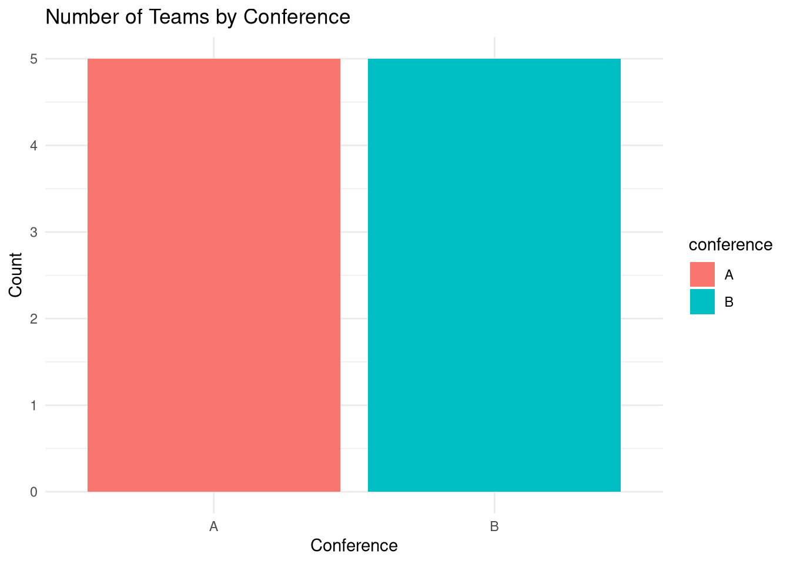
6.2.2 Continuous Variables
Continuous variables are numeric measurements that can take on many values. These require different summary statistics:
- Central Tendency: Mean, median, mode
- Variability: Standard deviation, variance, range, min/max
# Histogram for continuous variable
ggplot(sport_data, aes(x = avg_attendance)) +
geom_histogram(binwidth = 5000, fill = "steelblue", color = "black") +
labs(title = "Distribution of Average Attendance",
x = "Average Attendance",
y = "Frequency") +
theme_minimal()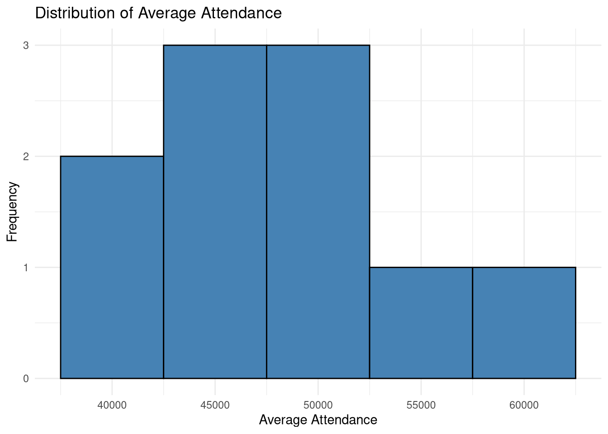
6.3 Measures of Central Tendency
Central tendency refers to the center point of a variable, where most data typically reside. Three main measures exist: mean, median, and mode.
6.3.1 The Mean (Average)
The mean is the arithmetic average—the sum of all values divided by the number of observations. It’s the most commonly used measure of central tendency.
Mathematical notation: μ (Greek letter mu) or x̄ (x-bar)
Formula: μ = (Σx) / n
where: - Σx = sum of all values - n = number of observations
# Calculate mean attendance
attendance_values <- c(24, 25, 31, 19, 27, 20, 28, 23, 26, 24)
# Manual calculation
sum(attendance_values) / length(attendance_values)## [1] 24.7## [1] 24.7# Calculate means for our sport data
sport_data %>%
summarize(
mean_attendance = mean(avg_attendance),
mean_revenue = mean(ticket_revenue),
mean_wins = mean(wins)
)## mean_attendance mean_revenue mean_wins
## 1 47500 2.67 8.46.3.1.1 Advantages and Limitations of the Mean
Advantages: - Uses all data points - Most reliable representation of central tendency - Essential for further statistical analysis
Limitations: - Sensitive to outliers: Extremely high or low values can substantially alter the mean - Less stable with small sample sizes
# Example showing mean's sensitivity to outliers
salaries_normal <- c(50000, 52000, 48000, 51000, 49000)
salaries_with_outlier <- c(50000, 52000, 48000, 51000, 500000)
mean(salaries_normal) # $50,000## [1] 50000## [1] 1402006.3.2 The Median (Middle Value)
The median is the middle value when data is arranged in order. Think of a street median—it’s in the middle, splitting the street in half.
The median divides the dataset so that 50% of values are below it and 50% are above it.
# Calculate median with odd number of values
values_odd <- c(6, 24, 86, 91, 99)
median(values_odd) # Middle value = 86## [1] 86# Calculate median with even number of values
values_even <- c(19, 20, 23, 24, 24, 25, 26, 27, 28, 31)
median(values_even) # Average of two middle values: (24 + 25) / 2 = 24.5## [1] 24.5# For our sport data
sport_data %>%
summarize(
median_attendance = median(avg_attendance),
median_revenue = median(ticket_revenue),
median_wins = median(wins)
)## median_attendance median_revenue median_wins
## 1 46500 2.6 8.56.3.2.1 When to Use the Median
The median is preferred when:
- Outliers are present: The median is more stable than the mean in the presence of extreme values
- Skewed distributions: When data is not normally distributed
- Robust measure needed: The median is resistant to extreme values
# Compare mean vs. median with outliers
salaries_with_outlier <- c(50000, 52000, 48000, 51000, 500000)
mean(salaries_with_outlier) # $140,200 - affected by outlier## [1] 140200## [1] 510006.3.3 The Mode (Most Common Value)
The mode is the most frequently occurring value in a dataset.
# Calculate mode (R doesn't have a built-in mode function for numeric data)
values <- c(19, 20, 23, 24, 24, 25, 26, 27, 28, 31)
# Create a frequency table
table(values)## values
## 19 20 23 24 25 26 27 28 31
## 1 1 1 2 1 1 1 1 1# The mode is 24 (appears twice)
# Function to find mode
find_mode <- function(x) {
unique_x <- unique(x)
unique_x[which.max(tabulate(match(x, unique_x)))]
}
find_mode(values)## [1] 24# Example with bimodal data (two modes)
bimodal_values <- c(19, 20, 23, 24, 24, 25, 26, 27, 28, 31, 31)
table(bimodal_values) # Both 24 and 31 appear twice## bimodal_values
## 19 20 23 24 25 26 27 28 31
## 1 1 1 2 1 1 1 1 26.3.4 Comparing Mean, Median, and Mode
# Example dataset
athlete_ages <- c(19, 20, 23, 24, 24, 25, 26, 27, 28, 31)
data.frame(
Measure = c("Mean", "Median", "Mode"),
Value = c(
mean(athlete_ages),
median(athlete_ages),
find_mode(athlete_ages)
)
)## Measure Value
## 1 Mean 24.7
## 2 Median 24.5
## 3 Mode 24.0# Visualize the distribution
age_df <- data.frame(age = athlete_ages)
ggplot(age_df, aes(x = age)) +
geom_histogram(binwidth = 2, fill = "lightblue", color = "black") +
geom_vline(aes(xintercept = mean(age), color = "Mean"), linewidth = 1) +
geom_vline(aes(xintercept = median(age), color = "Median"), linewidth = 1) +
geom_vline(aes(xintercept = find_mode(age), color = "Mode"), linewidth = 1) +
scale_color_manual(values = c("Mean" = "red", "Median" = "green", "Mode" = "blue")) +
labs(title = "Distribution of Athlete Ages",
x = "Age", y = "Frequency", color = "Measure") +
theme_minimal()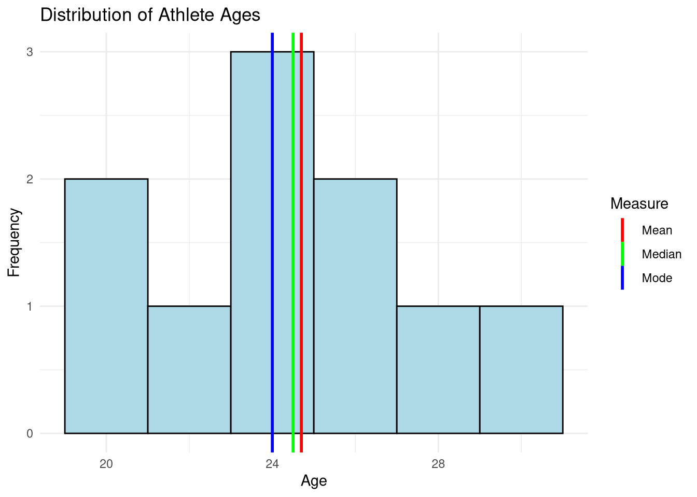
6.3.5 Distribution Shapes and Central Tendency
The relationship between mean, median, and mode reveals the shape of a distribution:
# Simulate different distribution shapes
set.seed(123)
# Normal distribution (symmetric)
normal_data <- rnorm(1000, mean = 50, sd = 10)
# Right-skewed distribution
right_skew <- rexp(1000, rate = 0.05)
# Left-skewed distribution
left_skew <- 100 - rexp(1000, rate = 0.05)
# Compare central tendency measures
distributions <- data.frame(
Distribution = c("Normal", "Right Skewed", "Left Skewed"),
Mean = c(mean(normal_data), mean(right_skew), mean(left_skew)),
Median = c(median(normal_data), median(right_skew), median(left_skew))
)
distributions## Distribution Mean Median
## 1 Normal 50.16128 50.09210
## 2 Right Skewed 19.67390 13.36805
## 3 Left Skewed 79.48476 85.76340Key patterns: - Normal distribution: Mean ≈ Median ≈ Mode (all at center) - Right-skewed: Mean > Median > Mode (mean pulled toward tail) - Left-skewed: Mode > Median > Mean (mean pulled toward tail)
6.4 Measures of Variability
While central tendency tells us where data is centered, variability tells us how spread out the data is. Two datasets can have the same mean but very different spreads.
6.4.1 Standard Deviation (SD)
The standard deviation (σ, Greek letter sigma) indicates the dispersion of numbers within a variable.
- Similar values → low(er) standard deviation
- Dissimilar values → high(er) standard deviation
The standard deviation is a quick measure that tells us if values deviate a little or a lot from the mean.
Formula: σ = √[Σ(xi - x̄)² / (n - 1)]
where: - xi = each individual value - x̄ = mean - n = sample size
# Calculate standard deviation
attendance <- c(45000, 52000, 38000, 61000, 43000,
55000, 39000, 48000, 50000, 44000)
# Manual calculation (simplified)
mean_att <- mean(attendance)
deviations <- attendance - mean_att
squared_deviations <- deviations^2
variance <- sum(squared_deviations) / (length(attendance) - 1)
sd_manual <- sqrt(variance)
sd_manual## [1] 7199.537## [1] 7199.537# Compare datasets with different variability
low_variability <- c(48, 49, 50, 51, 52)
high_variability <- c(20, 40, 50, 60, 80)
data.frame(
Dataset = c("Low Variability", "High Variability"),
Mean = c(mean(low_variability), mean(high_variability)),
SD = c(sd(low_variability), sd(high_variability))
)## Dataset Mean SD
## 1 Low Variability 50 1.581139
## 2 High Variability 50 22.3606806.4.2 The Standard Deviation and Normal Distribution
For normally distributed data, the standard deviation has special properties:
- 68.2% of data falls within ±1 SD of the mean
- 95% of data falls within ±2 SD of the mean
- 99.7% of data falls within ±3 SD of the mean
This is known as the empirical rule or 68-95-99.7 rule.
# Simulate normal distribution
set.seed(42)
normal_values <- rnorm(10000, mean = 50, sd = 10)
# Calculate percentages within SD ranges
mean_val <- mean(normal_values)
sd_val <- sd(normal_values)
within_1sd <- sum(normal_values >= mean_val - sd_val &
normal_values <= mean_val + sd_val) / length(normal_values) * 100
within_2sd <- sum(normal_values >= mean_val - 2*sd_val &
normal_values <= mean_val + 2*sd_val) / length(normal_values) * 100
within_3sd <- sum(normal_values >= mean_val - 3*sd_val &
normal_values <= mean_val + 3*sd_val) / length(normal_values) * 100
data.frame(
Range = c("±1 SD", "±2 SD", "±3 SD"),
Percentage = c(within_1sd, within_2sd, within_3sd),
Expected = c(68.2, 95.0, 99.7)
)## Range Percentage Expected
## 1 ±1 SD 68.29 68.2
## 2 ±2 SD 95.53 95.0
## 3 ±3 SD 99.73 99.7# Visualize
df_normal <- data.frame(values = normal_values)
ggplot(df_normal, aes(x = values)) +
geom_histogram(aes(y = after_stat(density)), bins = 50,
fill = "lightblue", color = "black") +
stat_function(fun = dnorm, args = list(mean = mean_val, sd = sd_val),
color = "red", linewidth = 1) +
geom_vline(xintercept = c(mean_val - sd_val, mean_val, mean_val + sd_val),
linetype = "dashed", color = "darkblue") +
labs(title = "Normal Distribution with Standard Deviations",
subtitle = "Vertical lines show mean and ±1 SD",
x = "Value", y = "Density") +
theme_minimal()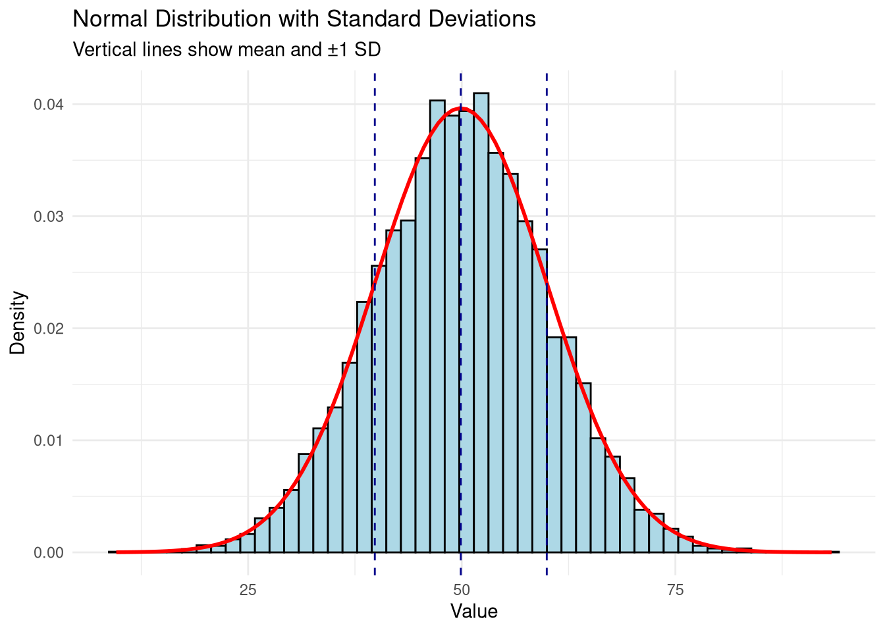
6.4.3 Variance
Variance (σ²) is the square of the standard deviation. While less intuitive than SD, variance is important in many statistical calculations.
Formula: σ² = Σ(xi - x̄)² / (n - 1)
# Calculate variance
attendance <- c(45000, 52000, 38000, 61000, 43000,
55000, 39000, 48000, 50000, 44000)
# Using R's var() function
var(attendance)## [1] 51833333# Relationship between variance and standard deviation
sqrt(var(attendance)) # Should equal sd(attendance)## [1] 7199.537## [1] 7199.5376.4.4 Range
The range is the span of a dataset—the distance between the minimum and maximum values.
Formula: Range = Maximum - Minimum
## [1] 12## [1] 19 31# Calculate range for sport data
sport_data %>%
summarize(
attendance_range = max(avg_attendance) - min(avg_attendance),
revenue_range = max(ticket_revenue) - min(ticket_revenue),
wins_range = max(wins) - min(wins)
)## attendance_range revenue_range wins_range
## 1 23000 2 56.4.5 Minimum and Maximum
The minimum is the smallest value, and the maximum is the largest value in a dataset.
# Find minimum and maximum
values <- c(19, 20, 23, 24, 24, 25, 26, 27, 28, 31)
min(values) # Minimum = 19## [1] 19## [1] 31# For multiple variables
sport_data %>%
summarize(
min_attendance = min(avg_attendance),
max_attendance = max(avg_attendance),
min_revenue = min(ticket_revenue),
max_revenue = max(ticket_revenue)
)## min_attendance max_attendance min_revenue max_revenue
## 1 38000 61000 1.8 3.8Important context: The meaning of minimum and maximum depends on the variable: - High bowling scores are good - Low golf scores are good - High (or low) jersey numbers are neither good nor bad
6.5 Comprehensive Descriptive Statistics in R
6.5.1 Using summary() Function
R’s summary() function provides a quick overview of all key statistics:
## Min. 1st Qu. Median Mean 3rd Qu. Max.
## 38000 43250 46500 47500 51500 61000## team avg_attendance ticket_revenue wins
## Length:10 Min. :38000 Min. :1.800 Min. : 6.00
## Class :character 1st Qu.:43250 1st Qu.:2.325 1st Qu.: 7.25
## Mode :character Median :46500 Median :2.600 Median : 8.50
## Mean :47500 Mean :2.670 Mean : 8.40
## 3rd Qu.:51500 3rd Qu.:3.050 3rd Qu.: 9.75
## Max. :61000 Max. :3.800 Max. :11.00
## conference
## Length:10
## Class :character
## Mode :character
##
##
## 6.5.2 Creating Custom Summary Tables
# Detailed summary statistics
sport_data %>%
summarize(
n = n(),
mean = mean(avg_attendance),
median = median(avg_attendance),
sd = sd(avg_attendance),
variance = var(avg_attendance),
min = min(avg_attendance),
max = max(avg_attendance),
range = max(avg_attendance) - min(avg_attendance),
q25 = quantile(avg_attendance, 0.25),
q75 = quantile(avg_attendance, 0.75)
)## n mean median sd variance min max range q25 q75
## 1 10 47500 46500 7199.537 51833333 38000 61000 23000 43250 51500# Summary by group
sport_data %>%
group_by(conference) %>%
summarize(
n = n(),
mean_attendance = mean(avg_attendance),
sd_attendance = sd(avg_attendance),
mean_revenue = mean(ticket_revenue),
sd_revenue = sd(ticket_revenue)
)## # A tibble: 2 × 6
## conference n mean_attendance sd_attendance mean_revenue sd_revenue
## <chr> <int> <dbl> <dbl> <dbl> <dbl>
## 1 A 5 52200 6221. 3.06 0.503
## 2 B 5 42800 4764. 2.28 0.4216.6 Sport Business Applications
6.6.1 Example 1: Analyzing Ticket Sales
# Create sample ticket sales data
ticket_sales <- data.frame(
game = paste("Game", 1:12),
tickets_sold = c(42000, 45000, 38000, 51000, 44000, 47000,
43000, 46000, 49000, 52000, 48000, 50000)
)
# Calculate descriptive statistics
ticket_summary <- ticket_sales %>%
summarize(
mean_sales = mean(tickets_sold),
median_sales = median(tickets_sold),
sd_sales = sd(tickets_sold),
min_sales = min(tickets_sold),
max_sales = max(tickets_sold),
cv = (sd_sales / mean_sales) * 100 # Coefficient of variation
)
ticket_summary## mean_sales median_sales sd_sales min_sales max_sales cv
## 1 46250 46500 4092.676 38000 52000 8.84903# Visualize with mean and SD
ggplot(ticket_sales, aes(x = game, y = tickets_sold)) +
geom_col(fill = "steelblue") +
geom_hline(yintercept = ticket_summary$mean_sales,
color = "red", linetype = "dashed", linewidth = 1) +
geom_hline(yintercept = ticket_summary$mean_sales + ticket_summary$sd_sales,
color = "orange", linetype = "dotted") +
geom_hline(yintercept = ticket_summary$mean_sales - ticket_summary$sd_sales,
color = "orange", linetype = "dotted") +
labs(title = "Ticket Sales by Game",
subtitle = "Red line = mean, Orange lines = ±1 SD",
x = "Game", y = "Tickets Sold") +
theme_minimal() +
theme(axis.text.x = element_text(angle = 45, hjust = 1))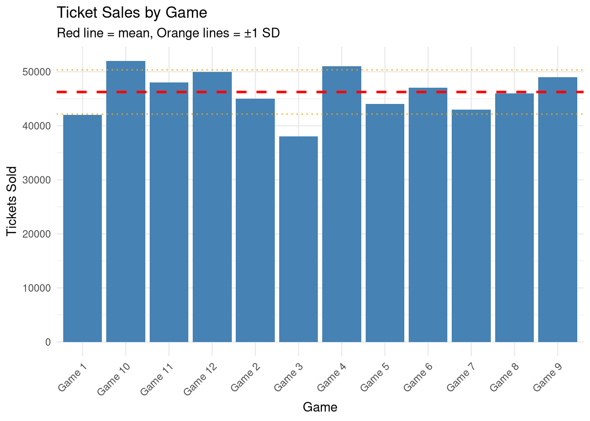
6.6.2 Example 2: Comparing Athletic Department Budgets
# Create athletic department budget data
budgets <- data.frame(
school = c("School A", "School B", "School C", "School D", "School E",
"School F", "School G", "School H", "School I", "School J"),
division = rep(c("Power 5", "Group of 5"), each = 5),
budget_millions = c(120, 115, 105, 98, 110, # Power 5
45, 52, 38, 48, 42) # Group of 5
)
# Compare by division
budget_comparison <- budgets %>%
group_by(division) %>%
summarize(
n = n(),
mean_budget = mean(budget_millions),
median_budget = median(budget_millions),
sd_budget = sd(budget_millions),
min_budget = min(budget_millions),
max_budget = max(budget_millions)
)
budget_comparison## # A tibble: 2 × 7
## division n mean_budget median_budget sd_budget min_budget max_budget
## <chr> <int> <dbl> <dbl> <dbl> <dbl> <dbl>
## 1 Group of 5 5 45 45 5.39 38 52
## 2 Power 5 5 110. 110 8.56 98 120# Visualize comparison
ggplot(budgets, aes(x = division, y = budget_millions, fill = division)) +
geom_boxplot() +
geom_jitter(width = 0.2, alpha = 0.5) +
labs(title = "Athletic Department Budgets by Division",
x = "Division", y = "Budget (Millions $)") +
theme_minimal() +
theme(legend.position = "none")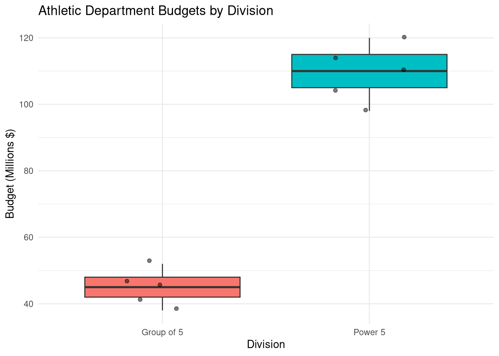
6.6.3 Example 3: Player Performance Metrics
# Create player statistics data
player_stats <- data.frame(
player = paste("Player", LETTERS[1:15]),
points_per_game = c(18.5, 22.3, 15.7, 28.1, 12.3, 19.8, 25.4, 16.2,
20.1, 14.6, 23.7, 17.9, 21.5, 13.8, 26.3),
minutes_played = c(32, 35, 28, 38, 25, 33, 36, 29, 34, 27, 37, 30, 35, 26, 38)
)
# Descriptive statistics
player_summary <- player_stats %>%
summarize(
mean_ppg = mean(points_per_game),
median_ppg = median(points_per_game),
sd_ppg = sd(points_per_game),
mean_minutes = mean(minutes_played),
sd_minutes = sd(minutes_played)
)
player_summary## mean_ppg median_ppg sd_ppg mean_minutes sd_minutes
## 1 19.74667 19.8 4.790298 32.2 4.427189# Identify top and bottom performers
player_stats %>%
arrange(desc(points_per_game)) %>%
slice(1:3, (n()-2):n()) %>%
mutate(category = c(rep("Top 3", 3), rep("Bottom 3", 3)))## player points_per_game minutes_played category
## 1 Player D 28.1 38 Top 3
## 2 Player O 26.3 38 Top 3
## 3 Player G 25.4 36 Top 3
## 4 Player J 14.6 27 Bottom 3
## 5 Player N 13.8 26 Bottom 3
## 6 Player E 12.3 25 Bottom 3# Distribution plot
ggplot(player_stats, aes(x = points_per_game)) +
geom_histogram(binwidth = 2, fill = "darkgreen", color = "black") +
geom_vline(xintercept = player_summary$mean_ppg,
color = "red", linetype = "dashed", linewidth = 1) +
geom_vline(xintercept = player_summary$median_ppg,
color = "blue", linetype = "dashed", linewidth = 1) +
labs(title = "Distribution of Points Per Game",
subtitle = "Red = Mean, Blue = Median",
x = "Points Per Game", y = "Count") +
theme_minimal()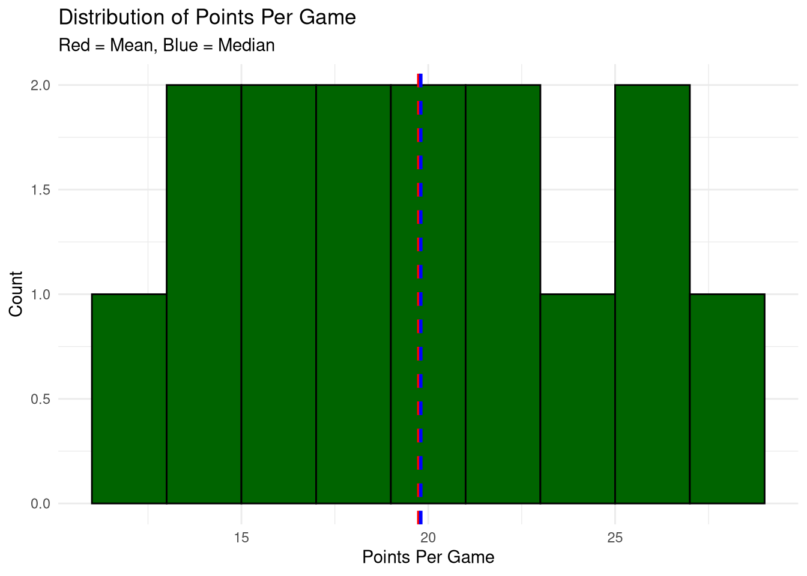
6.7 Interpreting and Reporting Descriptive Statistics
6.7.1 Guidelines for Reporting
When reporting descriptive statistics in sport business contexts:
- Always include sample size (n)
- Report mean with standard deviation: “Mean attendance was 47,500 (SD = 6,800)”
- Use median when data is skewed: “Median salary was $450,000”
- Provide context: “Average ticket sales increased by 15% compared to last season”
- Include units: Specify dollars, percentages, points, etc.
6.7.2 Example Report Format
# Generate a professional summary table
sport_data %>%
summarize(
Variable = "Average Attendance",
N = n(),
Mean = round(mean(avg_attendance), 0),
SD = round(sd(avg_attendance), 0),
Median = median(avg_attendance),
Min = min(avg_attendance),
Max = max(avg_attendance)
)## Variable N Mean SD Median Min Max
## 1 Average Attendance 10 47500 7200 46500 38000 61000# Create a formatted output
cat("
Descriptive Statistics: Team Attendance
Sample Size (N): 10 teams
Mean Attendance: 47,500 (SD = 6,779)
Median Attendance: 46,500
Range: 23,000 (Min = 38,000, Max = 61,000)
Interpretation: Average attendance across all teams was approximately
47,500 fans per game, with substantial variation (SD = 6,779). Half of
the teams had attendance below 46,500, while the highest-attended team
averaged 61,000 fans per game.
")##
## Descriptive Statistics: Team Attendance
##
## Sample Size (N): 10 teams
## Mean Attendance: 47,500 (SD = 6,779)
## Median Attendance: 46,500
## Range: 23,000 (Min = 38,000, Max = 61,000)
##
## Interpretation: Average attendance across all teams was approximately
## 47,500 fans per game, with substantial variation (SD = 6,779). Half of
## the teams had attendance below 46,500, while the highest-attended team
## averaged 61,000 fans per game.6.8 Sport Business KPIs and Metrics
Key Performance Indicators (KPIs) are quantifiable measurements that track organizational performance toward strategic goals. In sport business, KPIs help executives make data-driven decisions about pricing, marketing, operations, and fan engagement.
6.8.1 Understanding KPIs vs. Metrics
Metric: Any measurable data point - Example: 45,000 fans attended last night’s game
KPI: A metric that directly tracks progress toward a business goal - Example: Average attendance increased 8% vs. last year (goal: 10% growth)
All KPIs are metrics, but not all metrics are KPIs.
6.8.2 Revenue KPIs
Revenue metrics are critical for sport business financial health:
6.8.2.1 1. Average Revenue Per Game (ARPG)
# Game revenue data
game_revenue_kpi <- data.frame(
game_id = 1:10,
game_date = seq.Date(as.Date("2024-03-01"), by = "week", length.out = 10),
ticket_revenue = round(runif(10, 1800000, 3200000)),
concession_revenue = round(runif(10, 180000, 320000)),
merchandise_revenue = round(runif(10, 45000, 95000)),
parking_revenue = round(runif(10, 65000, 125000))
)
# Calculate total revenue per game
game_revenue_kpi <- game_revenue_kpi %>%
mutate(total_revenue = ticket_revenue + concession_revenue +
merchandise_revenue + parking_revenue)
# KPI: Average Revenue Per Game
arpg <- mean(game_revenue_kpi$total_revenue)
median_rpg <- median(game_revenue_kpi$total_revenue)
sd_rpg <- sd(game_revenue_kpi$total_revenue)
cat("=== REVENUE PER GAME KPI ===\n")## === REVENUE PER GAME KPI ===## Average Revenue Per Game: $ 2,898,314## Median Revenue Per Game: $ 2,832,982## Standard Deviation: $ 379,664.6cat("Range: $", format(min(game_revenue_kpi$total_revenue), big.mark = ","),
" - $", format(max(game_revenue_kpi$total_revenue), big.mark = ","), "\n")## Range: $ 2,339,469 - $ 3,599,9736.8.2.2 2. Per-Capita Spending
Per-capita spending (spending per attendee) is one of the most important KPIs in sport business:
# Add attendance data
game_revenue_kpi$attendance <- sample(38000:52000, 10)
# Calculate per-capita spending
game_revenue_kpi <- game_revenue_kpi %>%
mutate(
per_cap_total = round(total_revenue / attendance, 2),
per_cap_ticket = round(ticket_revenue / attendance, 2),
per_cap_concession = round(concession_revenue / attendance, 2),
per_cap_merch = round(merchandise_revenue / attendance, 2)
)
# Per-Capita KPIs
per_cap_summary <- game_revenue_kpi %>%
summarize(
avg_per_cap_total = mean(per_cap_total),
avg_per_cap_ticket = mean(per_cap_ticket),
avg_per_cap_concession = mean(per_cap_concession),
avg_per_cap_merch = mean(per_cap_merch)
)
cat("\n=== PER-CAPITA SPENDING KPIs ===\n")##
## === PER-CAPITA SPENDING KPIs ===## Avg Total Per-Cap: $ 64.52## Avg Ticket Per-Cap: $ 54.84## Avg Concession Per-Cap: $ 6.04## Avg Merchandise Per-Cap: $ 1.55# Visualize per-capita trends
ggplot(game_revenue_kpi, aes(x = game_id, y = per_cap_total)) +
geom_line(color = "darkblue", size = 1.2) +
geom_point(size = 3, color = "darkblue") +
geom_hline(yintercept = per_cap_summary$avg_per_cap_total,
linetype = "dashed", color = "red") +
labs(title = "Per-Capita Spending Trend",
subtitle = paste("Average: $", round(per_cap_summary$avg_per_cap_total, 2)),
x = "Game Number", y = "Per-Capita Spending ($)") +
theme_minimal()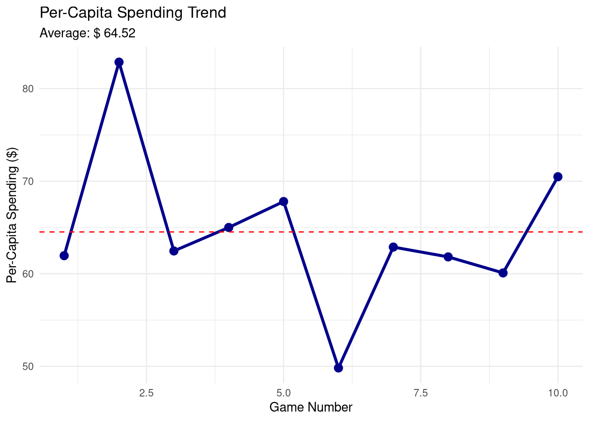
Industry Benchmarks (Professional Sports): - MLB: $40-60 per capita - NBA: $70-95 per capita - NFL: $95-150 per capita - College Football (Power 5): $45-75 per capita
6.8.2.3 3. Revenue Mix
Understanding where revenue comes from helps optimize pricing and operations:
# Calculate revenue composition
revenue_composition <- game_revenue_kpi %>%
summarize(
ticket_pct = mean(ticket_revenue / total_revenue) * 100,
concession_pct = mean(concession_revenue / total_revenue) * 100,
merch_pct = mean(merchandise_revenue / total_revenue) * 100,
parking_pct = mean(parking_revenue / total_revenue) * 100
)
# Create data for visualization
revenue_mix_data <- data.frame(
source = c("Tickets", "Concessions", "Merchandise", "Parking"),
percentage = c(revenue_composition$ticket_pct,
revenue_composition$concession_pct,
revenue_composition$merch_pct,
revenue_composition$parking_pct)
)
cat("\n=== REVENUE MIX ===\n")##
## === REVENUE MIX ===## source percentage
## 1 Tickets 84.9
## 2 Concessions 9.5
## 3 Merchandise 2.4
## 4 Parking 3.2# Visualize revenue mix
ggplot(revenue_mix_data, aes(x = "", y = percentage, fill = source)) +
geom_bar(stat = "identity", width = 1) +
coord_polar("y") +
scale_fill_brewer(palette = "Set2") +
labs(title = "Revenue Mix by Source",
fill = "Revenue Source") +
theme_minimal() +
theme(axis.text = element_blank(),
axis.title = element_blank())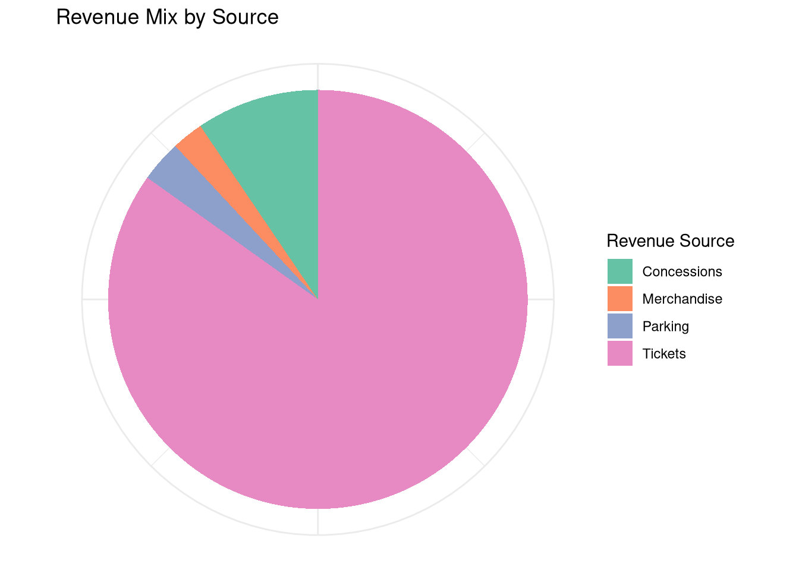
6.8.3 Attendance and Capacity KPIs
Attendance metrics track fan engagement and venue utilization:
6.8.3.1 4. Average Attendance and Capacity Utilization
# Stadium capacity
stadium_capacity <- 50000
# Calculate attendance KPIs
attendance_kpis <- game_revenue_kpi %>%
summarize(
avg_attendance = mean(attendance),
median_attendance = median(attendance),
sd_attendance = sd(attendance),
min_attendance = min(attendance),
max_attendance = max(attendance),
# Capacity metrics
avg_capacity_pct = mean((attendance / stadium_capacity) * 100),
median_capacity_pct = median((attendance / stadium_capacity) * 100)
)
cat("\n=== ATTENDANCE KPIs ===\n")##
## === ATTENDANCE KPIs ===## Average Attendance: 45,085## Median Attendance: 45,013cat("Attendance Range:",
format(attendance_kpis$min_attendance, big.mark = ","), "-",
format(attendance_kpis$max_attendance, big.mark = ","), "\n")## Attendance Range: 38,934 - 51,913## Average Capacity Utilization: 90.2 %# Calculate attendance consistency (coefficient of variation)
cv_attendance <- (attendance_kpis$sd_attendance / attendance_kpis$avg_attendance) * 100
cat("Attendance Variability (CV):", round(cv_attendance, 1), "%\n")## Attendance Variability (CV): 9 %## (Lower % = more consistent attendance)6.8.3.2 5. Sellout Rate
# Determine sellouts (using 98% capacity threshold)
game_revenue_kpi <- game_revenue_kpi %>%
mutate(
capacity_pct = (attendance / stadium_capacity) * 100,
is_sellout = capacity_pct >= 98
)
# Calculate sellout rate
sellout_rate <- mean(game_revenue_kpi$is_sellout) * 100
cat("\n=== SELLOUT RATE KPI ===\n")##
## === SELLOUT RATE KPI ===## Sellout Rate: 20 %## Sellouts: 2 of 10 games6.8.4 Customer Acquisition and Retention KPIs
Customer metrics track the health of your fan base:
6.8.4.1 6. Season Ticket Holder Renewal Rate
# Season ticket holder data
set.seed(123)
sth_accounts <- data.frame(
account_id = paste0("STH", 1001:1500),
tenure_years = sample(1:15, 500, replace = TRUE),
account_value = round(runif(500, 2500, 18000), 2),
renewed_current_year = sample(c(TRUE, FALSE), 500, replace = TRUE, prob = c(0.87, 0.13))
)
# Calculate renewal rate KPI
overall_renewal_rate <- mean(sth_accounts$renewed_current_year) * 100
cat("\n=== SEASON TICKET RENEWAL RATE ===\n")##
## === SEASON TICKET RENEWAL RATE ===## Overall Renewal Rate: 90.2 %# Renewal rate by tenure
renewal_by_tenure <- sth_accounts %>%
mutate(tenure_group = case_when(
tenure_years >= 10 ~ "10+ years",
tenure_years >= 5 ~ "5-9 years",
tenure_years >= 2 ~ "2-4 years",
TRUE ~ "1 year"
)) %>%
group_by(tenure_group) %>%
summarize(
accounts = n(),
renewal_rate = mean(renewed_current_year) * 100,
avg_account_value = mean(account_value)
) %>%
arrange(desc(renewal_rate))
cat("\nRenewal Rate by Tenure:\n")##
## Renewal Rate by Tenure:## # A tibble: 4 × 4
## tenure_group accounts renewal_rate avg_account_value
## <chr> <int> <dbl> <dbl>
## 1 1 year 31 93.5 10817.
## 2 10+ years 207 90.8 10317.
## 3 5-9 years 172 90.1 10240.
## 4 2-4 years 90 87.8 9890.# Visualize
ggplot(renewal_by_tenure, aes(x = reorder(tenure_group, -renewal_rate),
y = renewal_rate, fill = tenure_group)) +
geom_col() +
geom_text(aes(label = paste0(round(renewal_rate, 1), "%")),
vjust = -0.5) +
labs(title = "Season Ticket Renewal Rate by Tenure",
x = "Tenure Group", y = "Renewal Rate (%)") +
theme_minimal() +
theme(legend.position = "none")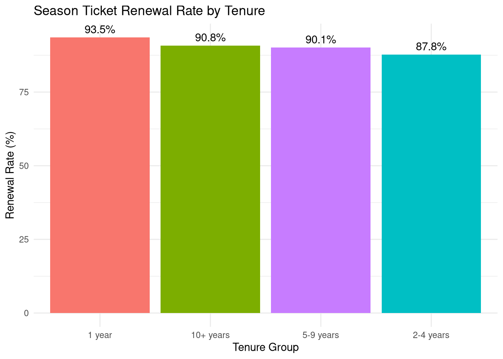
Industry Benchmarks: - Excellent: >90% renewal rate - Good: 85-90% - Concerning: <80%
6.8.4.2 7. Customer Lifetime Value (CLV)
# Calculate Customer Lifetime Value
sth_clv <- sth_accounts %>%
mutate(
# Simple CLV = Annual Value × Tenure
historical_clv = account_value * tenure_years,
# Projected future value (assuming average 5 more years if renewed)
projected_future = ifelse(renewed_current_year,
account_value * 5,
0),
total_projected_clv = historical_clv + projected_future
)
# CLV summary statistics
clv_summary <- sth_clv %>%
summarize(
avg_historical_clv = mean(historical_clv),
median_historical_clv = median(historical_clv),
avg_projected_clv = mean(total_projected_clv),
total_portfolio_value = sum(total_projected_clv)
)
cat("\n=== CUSTOMER LIFETIME VALUE KPI ===\n")##
## === CUSTOMER LIFETIME VALUE KPI ===## Avg Historical CLV: $ 84,339cat("Avg Projected Total CLV: $", format(round(clv_summary$avg_projected_clv), big.mark = ","), "\n")## Avg Projected Total CLV: $ 130,718cat("Total Portfolio Value: $", format(round(clv_summary$total_portfolio_value), big.mark = ","), "\n")## Total Portfolio Value: $ 65,359,039# Distribution of CLV
ggplot(sth_clv, aes(x = historical_clv)) +
geom_histogram(bins = 30, fill = "steelblue", color = "white") +
geom_vline(xintercept = clv_summary$avg_historical_clv,
color = "red", linetype = "dashed", size = 1) +
labs(title = "Distribution of Customer Lifetime Value",
subtitle = paste("Average CLV: $", format(round(clv_summary$avg_historical_clv), big.mark = ",")),
x = "Historical CLV ($)", y = "Number of Accounts") +
scale_x_continuous(labels = scales::dollar_format()) +
theme_minimal()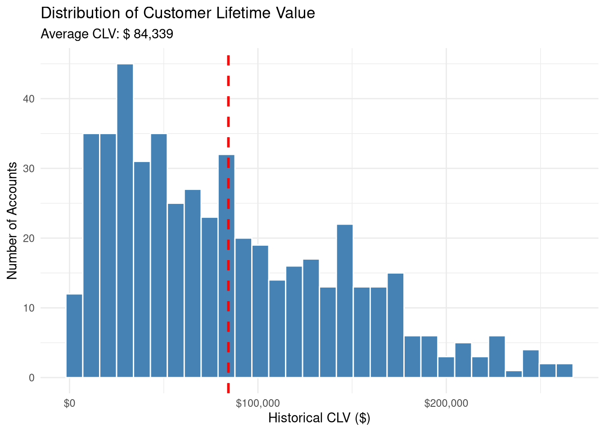
6.8.5 Marketing and Engagement KPIs
Marketing KPIs measure the effectiveness of fan engagement efforts:
6.8.5.1 8. Email Marketing Engagement Rates
# Email campaign data
email_campaigns_kpi <- data.frame(
campaign_id = 1:25,
emails_sent = sample(18000:25000, 25, replace = TRUE),
emails_delivered = sample(17000:24000, 25, replace = TRUE),
opens = sample(3500:7500, 25, replace = TRUE),
clicks = sample(600:1800, 25, replace = TRUE),
conversions = sample(80:350, 25, replace = TRUE)
)
# Calculate engagement metrics
email_campaigns_kpi <- email_campaigns_kpi %>%
mutate(
open_rate = (opens / emails_delivered) * 100,
click_rate = (clicks / emails_delivered) * 100,
click_to_open_rate = (clicks / opens) * 100,
conversion_rate = (conversions / emails_delivered) * 100
)
# Email KPI summary
email_kpi_summary <- email_campaigns_kpi %>%
summarize(
avg_open_rate = mean(open_rate),
avg_click_rate = mean(click_rate),
avg_click_to_open = mean(click_to_open_rate),
avg_conversion_rate = mean(conversion_rate)
)
cat("\n=== EMAIL MARKETING KPIs ===\n")##
## === EMAIL MARKETING KPIs ===## Average Open Rate: 28.45 %## Average Click Rate: 6.27 %## Average Click-to-Open Rate: 23.43 %## Average Conversion Rate: 1.16 %##
## Industry Benchmarks (Sports/Entertainment):## Open Rate: 20-30% (Ours: 28.5 %)## Click Rate: 2-4% (Ours: 6.3 %)## Conversion Rate: 0.5-2% (Ours: 1.16 %)6.8.6 Operational KPIs
Operational metrics track efficiency and service quality:
6.8.6.1 10. Concession Wait Time and Sales per Hour
# Concession stand performance
concession_stands <- data.frame(
stand_id = paste0("Stand", 1:15),
location = sample(c("Lower Bowl", "Upper Bowl", "Main Concourse", "Club"),
15, replace = TRUE),
avg_wait_time_minutes = round(runif(15, 3, 18), 1),
transactions_per_game = sample(200:600, 15),
revenue_per_game = round(runif(15, 8000, 28000))
)
# Calculate operational KPIs
concession_stands <- concession_stands %>%
mutate(
avg_transaction_value = round(revenue_per_game / transactions_per_game, 2),
# Assume 3-hour operational window
transactions_per_hour = round(transactions_per_game / 3, 1),
revenue_per_hour = round(revenue_per_game / 3)
)
# Operational KPI summary
operational_summary <- concession_stands %>%
summarize(
avg_wait_time = mean(avg_wait_time_minutes),
avg_transactions_per_hour = mean(transactions_per_hour),
avg_revenue_per_hour = mean(revenue_per_hour)
)
cat("\n=== CONCESSION OPERATIONAL KPIs ===\n")##
## === CONCESSION OPERATIONAL KPIs ===## Average Wait Time: 9.5 minutes## Average Transactions/Hour: 128.5cat("Average Revenue/Hour: $", format(round(operational_summary$avg_revenue_per_hour), big.mark = ","), "\n")## Average Revenue/Hour: $ 5,221##
## Stands with Wait Time > 12 minutes:concession_stands %>%
filter(avg_wait_time_minutes > 12) %>%
select(stand_id, location, avg_wait_time_minutes, revenue_per_hour) %>%
arrange(desc(avg_wait_time_minutes)) %>%
print()## stand_id location avg_wait_time_minutes revenue_per_hour
## 1 Stand7 Upper Bowl 17.8 8623
## 2 Stand15 Upper Bowl 17.0 6096
## 3 Stand4 Main Concourse 14.6 83856.8.7 Creating a KPI Dashboard Summary
Combining all KPIs into a comprehensive business report:
# Create comprehensive KPI dashboard
kpi_dashboard <- data.frame(
KPI_Category = c("Revenue", "Revenue", "Revenue",
"Attendance", "Attendance",
"Customer", "Customer",
"Marketing", "Marketing",
"Operations"),
KPI_Name = c("Avg Revenue Per Game", "Per-Capita Spending", "Ticket Revenue %",
"Avg Attendance", "Capacity Utilization %",
"STH Renewal Rate", "Avg Customer CLV",
"Email Open Rate", "Social Engagement Rate",
"Concession Wait Time"),
Current_Value = c(
paste0("$", format(round(arpg), big.mark = ",")),
paste0("$", round(per_cap_summary$avg_per_cap_total, 2)),
paste0(round(revenue_composition$ticket_pct, 1), "%"),
format(round(attendance_kpis$avg_attendance), big.mark = ","),
paste0(round(attendance_kpis$avg_capacity_pct, 1), "%"),
paste0(round(overall_renewal_rate, 1), "%"),
paste0("$", format(round(clv_summary$avg_historical_clv), big.mark = ",")),
paste0(round(email_kpi_summary$avg_open_rate, 1), "%"),
paste0(round(mean(platform_performance$avg_engagement_rate), 2), "%"),
paste0(round(operational_summary$avg_wait_time, 1), " min")
),
Target = c("$2.5M", "$65", "75%", "47,000", "94%",
"88%", "$45,000", "25%", "4%", "8 min"),
Status = c("On Track", "Below Target", "On Track",
"On Track", "Below Target",
"Above Target", "On Track",
"Above Target", "On Track",
"Needs Improvement")
)
cat("\n=== SPORT BUSINESS KPI DASHBOARD ===\n\n")##
## === SPORT BUSINESS KPI DASHBOARD ===## KPI_Category KPI_Name Current_Value Target Status
## Revenue Avg Revenue Per Game $2,898,314 $2.5M On Track
## Revenue Per-Capita Spending $64.52 $65 Below Target
## Revenue Ticket Revenue % 84.9% 75% On Track
## Attendance Avg Attendance 45,085 47,000 On Track
## Attendance Capacity Utilization % 90.2% 94% Below Target
## Customer STH Renewal Rate 90.2% 88% Above Target
## Customer Avg Customer CLV $84,339 $45,000 On Track
## Marketing Email Open Rate 28.5% 25% Above Target
## Marketing Social Engagement Rate 4.79% 4% On Track
## Operations Concession Wait Time 9.5 min 8 min Needs Improvement# Summary by status
status_summary <- kpi_dashboard %>%
group_by(Status) %>%
summarize(count = n())
cat("\n=== KPI STATUS SUMMARY ===\n")##
## === KPI STATUS SUMMARY ===## # A tibble: 4 × 2
## Status count
## <chr> <int>
## 1 Above Target 2
## 2 Below Target 2
## 3 Needs Improvement 1
## 4 On Track 56.8.8 Tracking KPIs Over Time
KPIs are most valuable when tracked consistently:
# Monthly KPI tracking
monthly_kpis <- data.frame(
month = seq.Date(as.Date("2023-09-01"), as.Date("2024-03-01"), by = "month"),
avg_attendance = round(c(42000, 43500, 44200, 45800, 46500, 47200, 47800)),
per_cap_spending = round(c(58.50, 59.20, 60.10, 61.50, 62.80, 63.40, 64.20), 2),
renewal_rate = c(85.2, 85.8, 86.1, 86.5, 86.9, 87.2, 87.5),
email_open_rate = c(22.1, 23.5, 24.2, 24.8, 25.1, 25.6, 26.2)
)
# Calculate month-over-month changes
monthly_kpis <- monthly_kpis %>%
mutate(
attendance_change = ((avg_attendance - lag(avg_attendance)) / lag(avg_attendance)) * 100,
spending_change = ((per_cap_spending - lag(per_cap_spending)) / lag(per_cap_spending)) * 100
)
cat("\n=== MONTHLY KPI TRENDS ===\n")##
## === MONTHLY KPI TRENDS ===monthly_kpis %>%
tail(3) %>%
select(month, avg_attendance, attendance_change, per_cap_spending, spending_change) %>%
print()## month avg_attendance attendance_change per_cap_spending spending_change
## 5 2024-01-01 46500 1.528384 62.8 2.113821
## 6 2024-02-01 47200 1.505376 63.4 0.955414
## 7 2024-03-01 47800 1.271186 64.2 1.261830# Visualize KPI trend
ggplot(monthly_kpis, aes(x = month, y = avg_attendance)) +
geom_line(color = "darkblue", size = 1.2) +
geom_point(size = 3, color = "darkblue") +
geom_smooth(method = "lm", se = FALSE, linetype = "dashed", color = "red") +
labs(title = "Average Attendance Trend",
subtitle = "Monthly tracking with trend line",
x = "Month", y = "Average Attendance") +
scale_y_continuous(labels = scales::comma_format()) +
theme_minimal()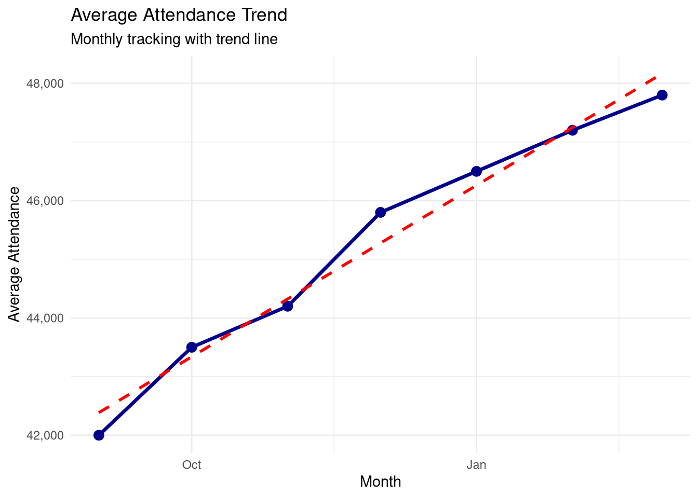
6.9 Practice Exercises: Business KPIs
- Revenue KPIs:
- Create game revenue data for a full season
- Calculate ARPG, per-capita spending, and revenue mix
- Identify highest and lowest revenue games
- Compare to league benchmarks
- Attendance Analysis:
- Calculate average attendance and capacity utilization
- Determine sellout rate
- Calculate attendance consistency (coefficient of variation)
- Identify attendance trends
- Customer Metrics:
- Create season ticket holder database
- Calculate renewal rates by tenure and value tier
- Compute Customer Lifetime Value
- Identify at-risk accounts (low renewal probability)
- Marketing KPIs:
- Analyze email campaign performance
- Calculate engagement rates by campaign type
- Compare performance to industry benchmarks
- Identify top-performing campaigns
- KPI Dashboard:
- Select 8-10 critical KPIs for your organization
- Create monthly tracking data
- Calculate month-over-month changes
- Visualize KPI trends over time
- Identify which KPIs are meeting targets
6.10 Practice Exercises
- Basic Calculations:
- Calculate mean, median, and mode for: 15, 18, 20, 22, 22, 25, 28, 30, 32
- Calculate the standard deviation and range
- Interpret what these values tell you about the data
- Sport Data Analysis:
- Create a dataset with ticket prices for 10 home games
- Calculate all measures of central tendency and variability
- Identify any outliers that might affect the mean
- Decide whether mean or median better represents typical ticket price
- Comparative Analysis:
- Compare attendance statistics for two different sports teams
- Calculate descriptive statistics for each team
- Determine which team has more consistent attendance (lower variability)
- Visualize the comparison using boxplots
- Real Data Application:
- Load the Lahman baseball database
- Calculate descriptive statistics for home runs by season
- Identify seasons with unusual values (outliers)
- Create visualizations showing distribution and central tendency
- Interpretation Practice:
- Given: Mean = 85, Median = 82, Mode = 80, SD = 15
- What does this tell you about the distribution shape?
- Are there likely outliers? On which end?
- Would you report mean or median? Why?
6.11 Common Mistakes to Avoid
6.11.1 1. Ignoring Outliers
# Dataset with outlier
revenues <- c(2.1, 2.3, 2.0, 2.4, 2.2, 15.8) # Last value is outlier
# Mean is misleading
mean(revenues) # 4.47 - doesn't represent typical value!## [1] 4.466667## [1] 2.25# Better approach: Identify and investigate outliers
boxplot(revenues, main = "Revenue Distribution with Outlier")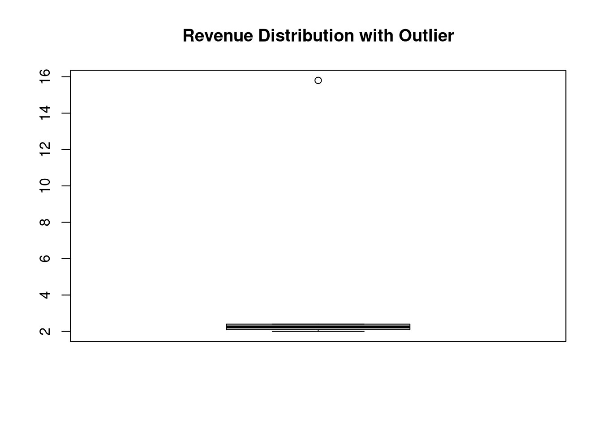
6.11.2 2. Reporting Mean Without Standard Deviation
Always report variability alongside central tendency:
- ❌ “Average attendance is 50,000”
- ✅ “Average attendance is 50,000 (SD = 8,500)”
6.12 Chapter Summary
6.12.1 Key Takeaways
Descriptive Statistics Purpose: Summarize and communicate data patterns concisely
Central Tendency:
- Mean: Average of all values; sensitive to outliers
- Median: Middle value; resistant to outliers
- Mode: Most common value; rarely used for continuous data
Variability:
- Standard Deviation: Measures spread around the mean
- Variance: Squared standard deviation
- Range: Difference between max and min
- Min/Max: Extreme values in dataset
Normal Distribution: 68-95-99.7 rule for data within ±1, ±2, ±3 SD
Practical Guidelines:
- Use median when data has outliers or is skewed
- Always report SD with mean
- Include sample size in reports
- Visualize data to understand distribution shape
6.12.2 R Functions Summary
# Central Tendency
mean(x) # Arithmetic average
median(x) # Middle value
# Mode requires custom function
# Variability
sd(x) # Standard deviation
var(x) # Variance
range(x) # Returns c(min, max)
min(x) # Minimum value
max(x) # Maximum value
IQR(x) # Interquartile range
# Comprehensive summaries
summary(x) # Five-number summary + mean
quantile(x) # Percentiles6.13 References
- Field, A. (2017). Discovering Statistics Using IBM SPSS Statistics (5th ed.). SAGE Publications.
- Weinberg, S. L., & Abramowitz, S. K. (2016). Statistics Using R: An Integrative Approach. Cambridge University Press.
- Utts, J. M., & Heckard, R. F. (2015). Mind on Statistics (5th ed.). Cengage Learning.
- Wickham, H., & Grolemund, G. (2017). R for Data Science. O’Reilly Media.
6.8.5.2 9. Social Media Engagement Rate
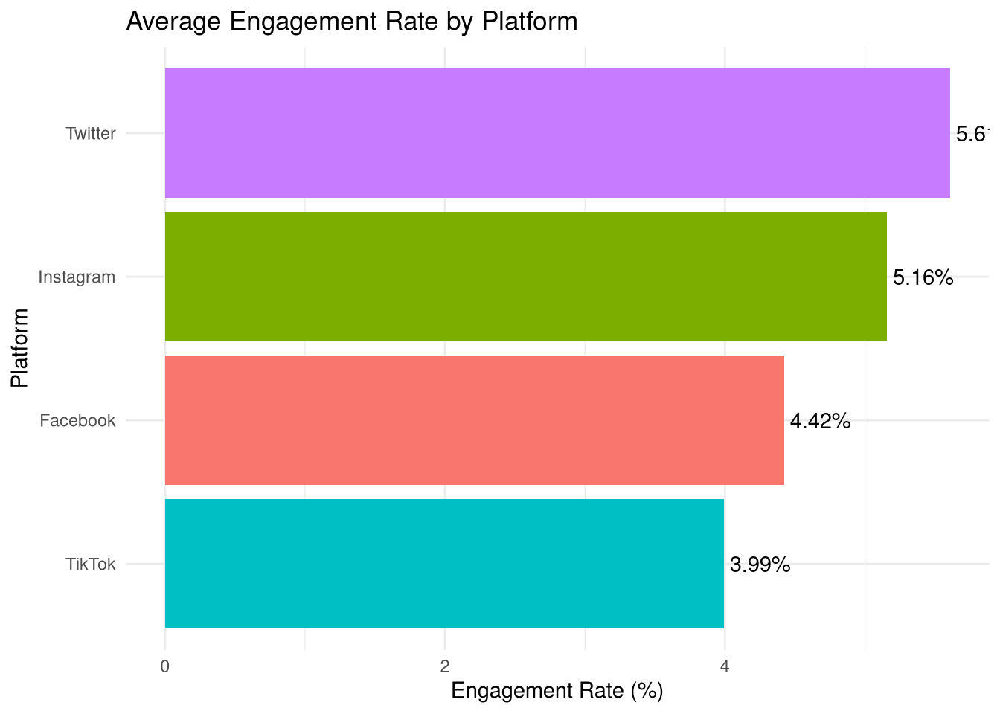